Fracture Radiology
- Find it: know the anatomy, trace the cortex all the way round, and look for secondary signs (an effusion or a fat-fluid level). Get at least two views: some fractures show on only one.
- Describe it with OLD ACIDS: Open or closed, Location, Degree (complete or incomplete), Articular involvement, Comminution/type, Intrinsic bone quality, Displacement, Soft tissues.
- Always describe the distal fragment relative to the proximal one. The one exception is the clavicle: the neck muscles pull the proximal fragment up, so it's described relative to the distal one.
- Comminuted = more than two fragments; it includes butterfly and segmental fractures. A spiral fracture looks oblique on one view; you need more views to call it.
- Varus = apex lateral, distal fragment points medially. Valgus = apex medial, distal fragment points laterally. Translation is measured in shaft widths; more than one width is off-ended.
- Intra-articular fractures need an anatomic reduction, heal more slowly and lead to secondary OA. A fat-fluid level (lipohemarthrosis) means an intra-articular fracture even when you can't see the line. A pathological fracture is usually transverse, through weak bone, after trivial or no trauma.
Learning Objectives
- Describe fractures with a systematic approach: the views provided, then location, complexity, pattern, displacement or deformity, joint surface involvement and other findings.
- List specific views that help identify and characterize fractures or dislocations of particular bones and joints.
- Define typical timelines for fracture healing and the basic appearance of a healing fracture on x-ray (covered in 10.5).
Dr. Vishal Kalia's module (58 min): three recorded parts and four knowledge checks. His other Week 10 talk is 10.1 Lower Limb Radiology; for the upper limb views see 9.1.
The Approach
Three principles guide the read: know the anatomy (which bone, which side), follow the cortex (the bright white outline; a break or step is the fracture) and look for joint extension, usually signalled by a joint effusion. Everything is described with the body in the anatomic position (palms forward), using medial/lateral, proximal/distal and anterior/posterior.
| OLD ACIDS | What to say |
|---|---|
| Open or closed | Does the fracture communicate with the skin? A clinical call, with x-ray clues (below) |
| Location | Which bone, which side, and where in the bone |
| Degree | Complete or incomplete |
| Articular surface | Intra- or extra-articular; step or depression; subluxation or dislocation |
| Comminution / type | Transverse, oblique, spiral, longitudinal, comminuted (butterfly, segmental) |
| Intrinsic bone quality | Normal bone, osteopenia, or a lesion (pathological fracture) |
| Displacement | Angulation, translation, rotation, distraction, impaction, override |
| Soft tissues | Swelling, effusion, air, foreign body |
Most fractures need more than one descriptor. A worked example from the recording: “AP view of the right hand: complete transverse fracture of the shaft (diaphysis) of the 4th metacarpal”, then add displacement, angulation and joint involvement.
Views
The standard set for any bone is AP, oblique and lateral. You need them all: an oblique proximal-phalanx fracture in the module is plain on the oblique view and invisible on the lateral, and a spiral fracture only declares itself across views. Special views vary by body part; three are named:
| Special view | Why |
|---|---|
| Ankle mortise | An AP with internal rotation that opens the distal tibiofibular syndesmosis, which the plain AP overlaps. A widened syndesmosis means a significant ankle injury that most likely needs surgical fixation. |
| Y-view (shoulder) | The scapular spine, the coracoid and the scapular blade make a Y; the humeral head should sit centred on the glenoid where the limbs meet. Off-centre anteriorly or posteriorly = a dislocation, including subtle ones. |
| Scaphoid views | PA in ulnar deviation and the clenched-fist view, to show the scaphoid (see 8.8) |
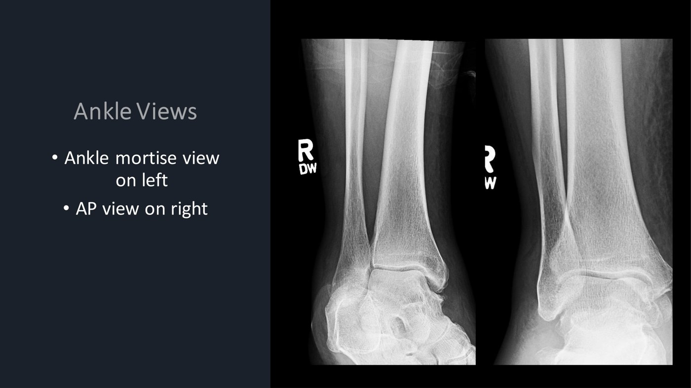
Mortise (left) vs AP (right). The mortise opens the tibiofibular joint. From the deck.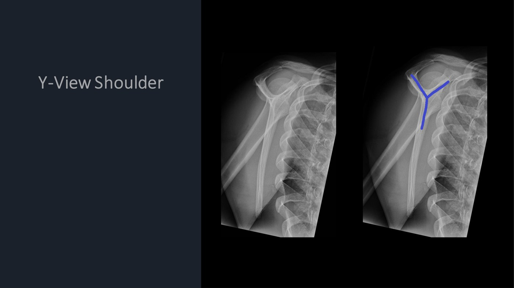
Y-view: the humeral head should centre on the Y. From the deck.Location
Name the bone, the side and where in the bone. In a child, an immature skeleton is one where you can still see the growth plates; once they fuse (adult), drop the physis and just say epiphysis, metaphysis or diaphysis.
| Region | What it is |
|---|---|
| Epiphysis | The end of the bone, carrying the articular surface |
| Physis (growth plate) | Makes new bone and lengthens it; a lucent line until it fuses |
| Metaphysis | The flared part next to the physis. Fractures where it meets the shaft are often called metadiaphyseal. |
| Diaphysis | The shaft |
| Apophysis | A non-articular bony prominence where muscles or tendons attach, under big traction forces, e.g. the calcaneal tuberosity (it looks a little sclerotic normally) |
Small bones also take their anatomic names: a metacarpal has a head, neck, shaft and base. “Shaft” and “diaphysis” are both fine.
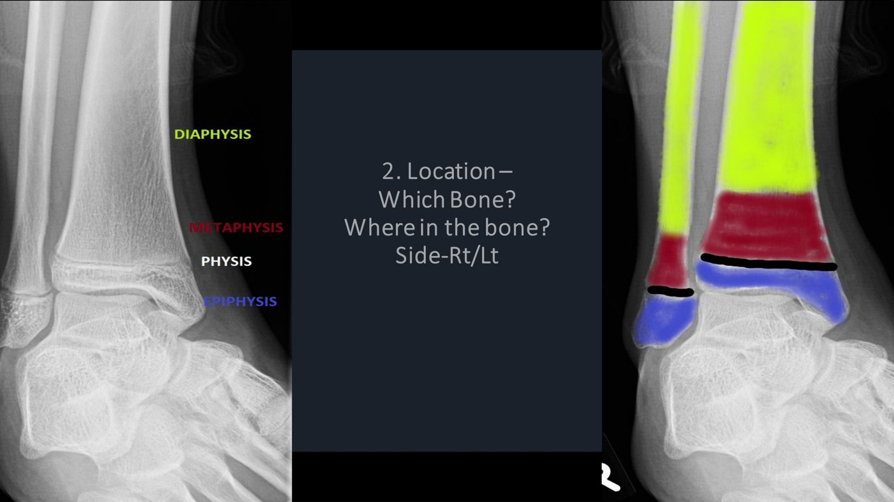
Immature ankle: epiphysis (blue), physis (black line), metaphysis (red), diaphysis (green). From the deck.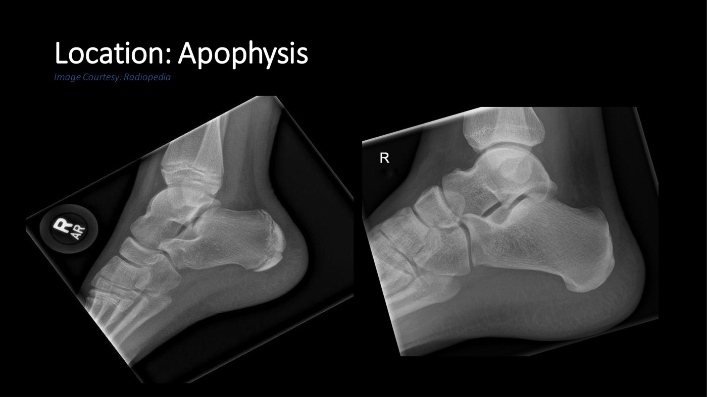
Calcaneal apophysis, immature (left) vs mature (right). Radiopaedia, via the deck.Types
| Group | Type | What it looks like |
|---|---|---|
| Complete (right through the bone) | Transverse | A straight line across the bone |
| Oblique | An angled line across the bone | |
| Spiral | From a twisting injury; winds round the bone. Looks oblique on one view, so get more views. May have a butterfly fragment. | |
| Longitudinal (linear) | Runs along the length of the bone; check whether it reaches the joint | |
| Comminuted | More than two fragments. Two named kinds: butterfly (a triangular wedge broken off between the main fragments) and segmental (a whole length of shaft separated by fractures above and below) | |
| Incomplete (children's bones) | Bowing | The bone bends and stays bent; no fracture line |
| Buckle (torus) | The compressed cortex crumples into a bulge | |
| Greenstick | The convex (tension) cortex breaks; the other side only bends | |
| Salter–Harris | Fractures involving the growth plate of an immature skeleton | |
| Others | Avulsion and open fractures (below) | |
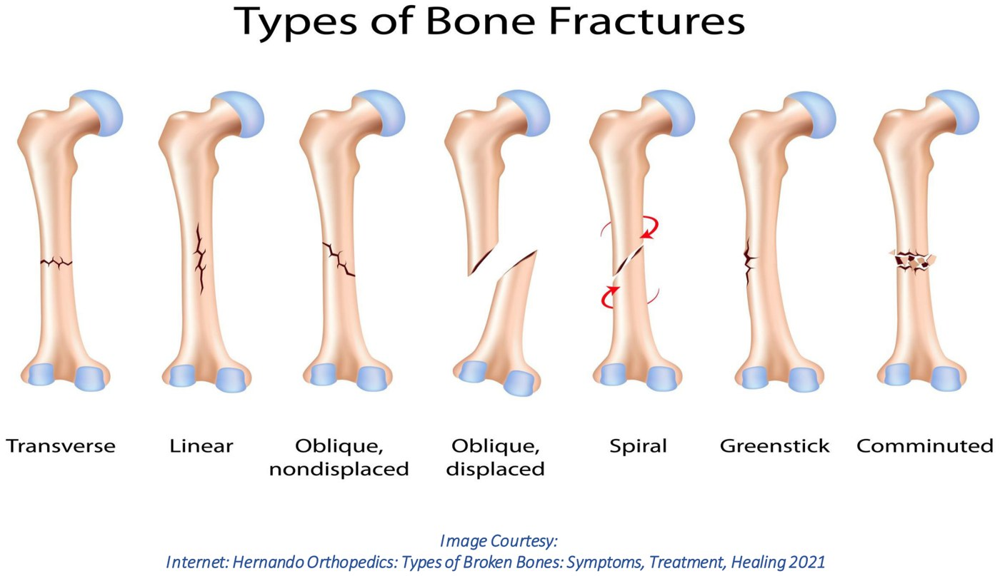
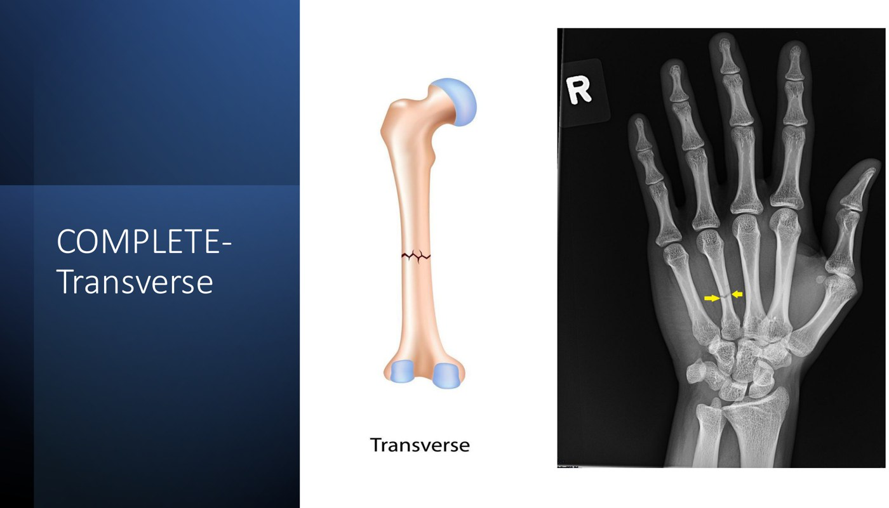
Transverse: 4th metacarpal shaft. From the deck.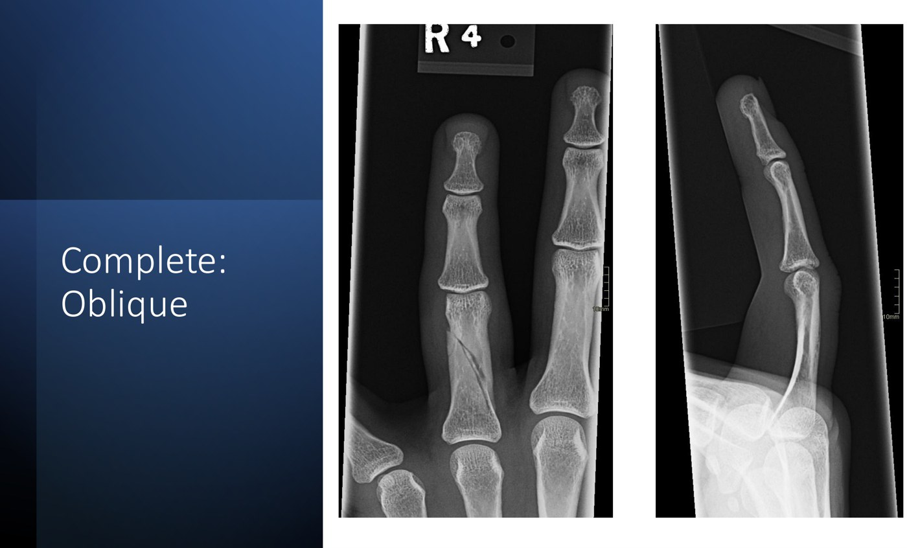
Oblique: seen on the oblique view, not the lateral. From the deck.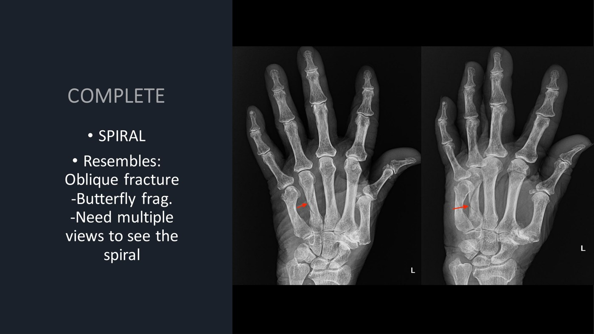
Spiral: oblique-looking on the AP, spiral on the oblique. From the deck.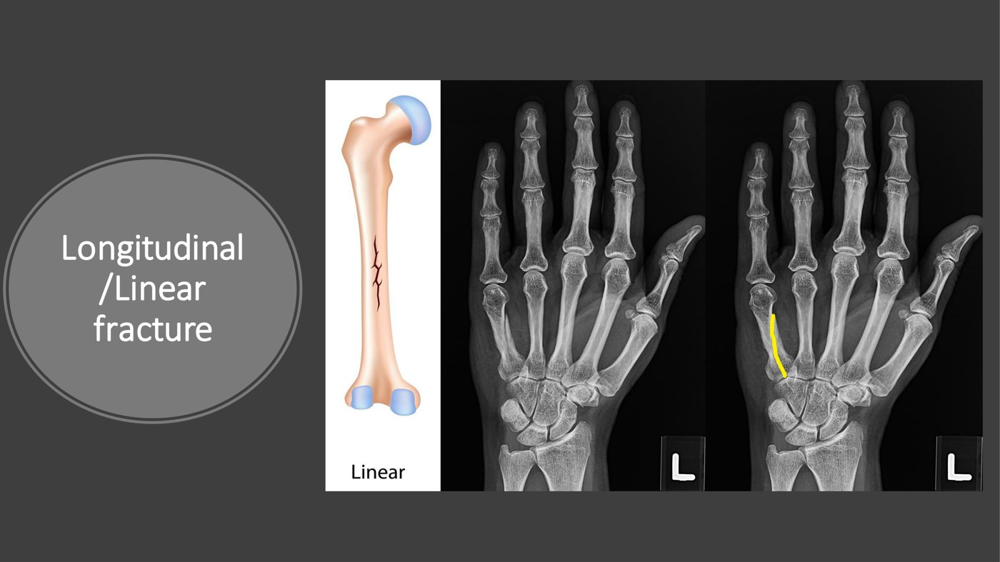
Longitudinal: 5th metacarpal, into the base. From the deck.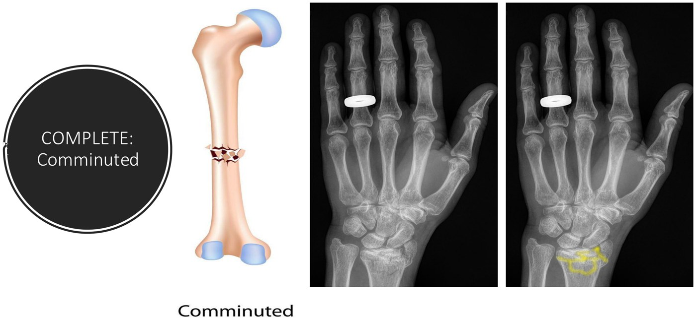
Comminuted distal radius, reaching the joint. From the deck.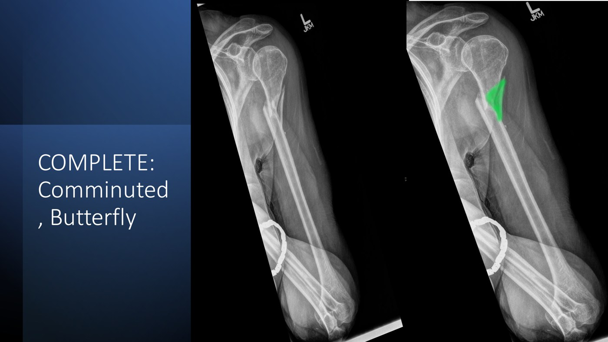
Butterfly fragment (green), humeral shaft. From the deck.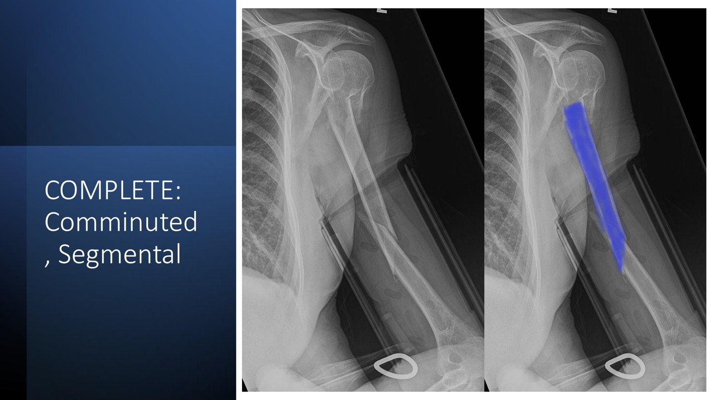
Displacement
Rule: describe the distal fragment relative to the proximal one. The exception is the clavicle, where the proximal fragment is described relative to the distal, because the neck muscles pull the proximal fragment up. Strictly, “displacement” covers four components (angulation, translation, rotation, distraction), but in everyday reports “displaced” means translated.
| Descriptor | How to describe it |
|---|---|
| Angulation | By the direction the apex points (or the way the distal fragment is angled). Varus = apex lateral, distal fragment toward the midline. Valgus = apex medial, distal fragment away from the midline. Also “apex dorsal”, “apex cranial” and so on. |
| Translation (“displacement”) | The ends shifted sideways off each other, measured in shaft widths (“half a shaft width medially”). More than one width = off-ended. |
| Rotation | The distal fragment turned internally or externally. Hard to see; you need the joints above and below on the film and the anatomic position in your head. Often left out of routine reports. |
| Distraction | A gap: the fragments pulled apart along the long axis. Give the maximum gap in mm. |
| Impaction | Fragments driven into each other: no gap, bone foreshortened, “telescoped in” |
| Override | Foreshortened like impaction, but the fragments overlap side by side (in mm) |
Look only at the distal fragment. If it points back toward the midline, that's varus (think bow-legged genu varum: the shins come back in). If it points away from the midline, that's valgus (knock-kneed genu valgum, hallux valgus). The apex is always on the opposite side from where the distal fragment points.
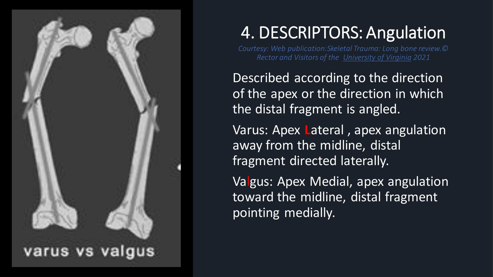
Varus vs valgus. University of Virginia, via the deck. The slide's “distal fragment” lines are reversed; see the note at the bottom.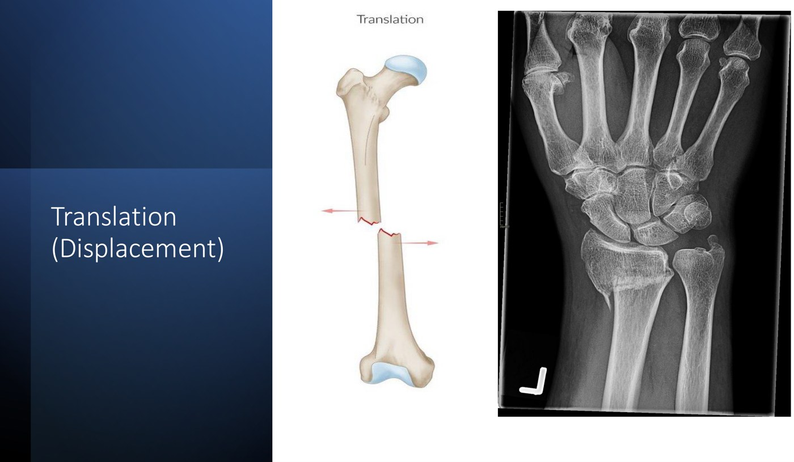
Translation: distal radius fragment shifted laterally. From the deck.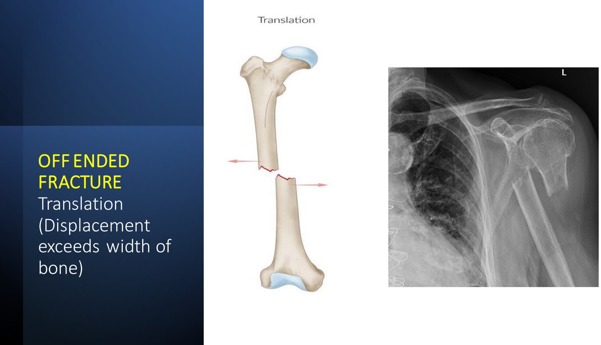
Off-ended: more than one shaft width. From the deck.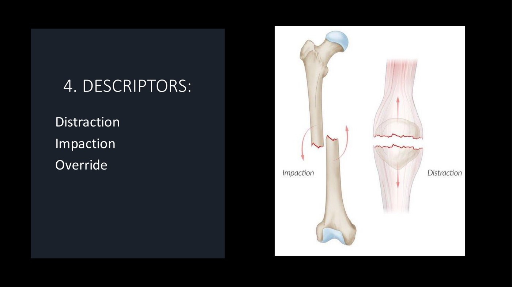
Impaction vs distraction. From the deck.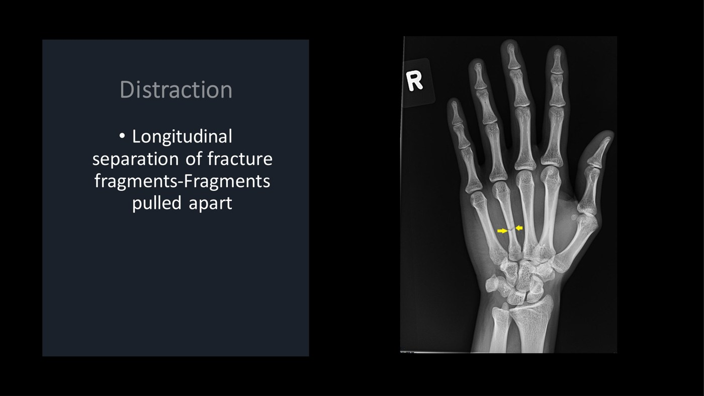
Distraction: a gap. From the deck.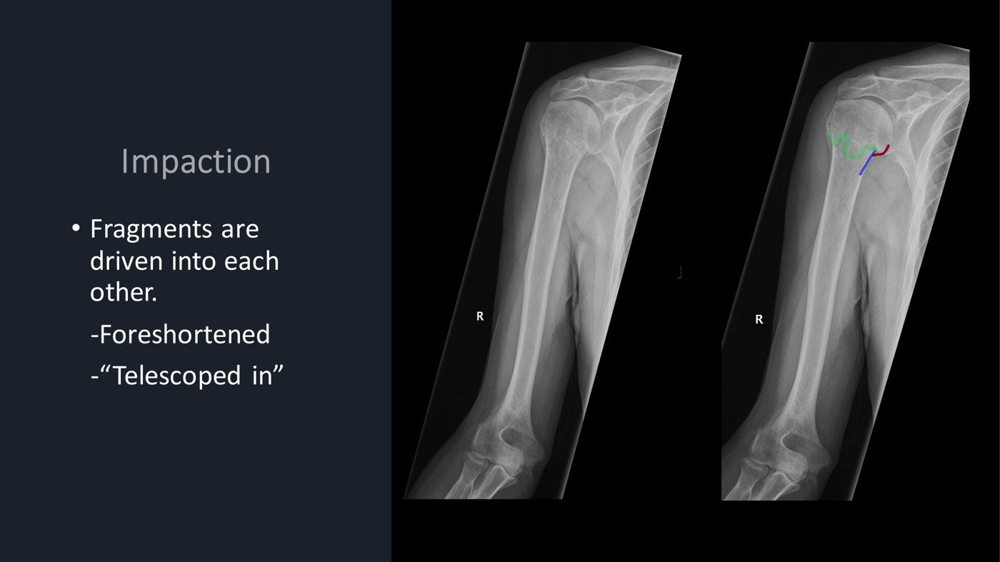
Impaction: telescoped, proximal humerus. From the deck.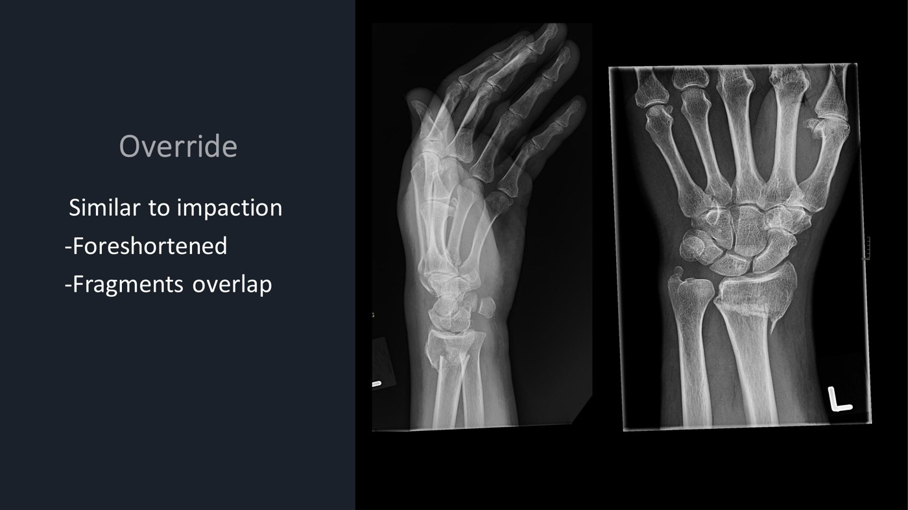
Joint Involvement
| Intra-articular | Extra-articular | |
|---|---|---|
| Joint surface | Involved | Spared |
| Reduction | Must be anatomic | Can be relatively anatomic |
| Healing | Slower: synovial fluid bathes the fracture and the joint keeps it moving | The bone remodels, especially with weight bearing |
| Long term | Risk of secondary OA, faster | Lower |
- Step or depression: say how far the articular surface is stepped. For most joints, more than 2 mm matters, because it may need surgical reduction and fixation.
- Secondary signs: when the line isn't visible, an effusion or a fat-fluid level still tells you the fracture reaches the joint. Marrow fat leaks into the joint with the blood (lipohemarthrosis) and floats on top as a straight line.
- Occult fracture: treat it as a fracture and re-image in 1–2 weeks. Bone resorbs along the fracture line in early healing, so it becomes visible.
- Subluxation vs dislocation: subluxation = surfaces still partly in contact; dislocation = completely out. Name it by where the distal bone has gone (e.g. a posterior elbow dislocation).
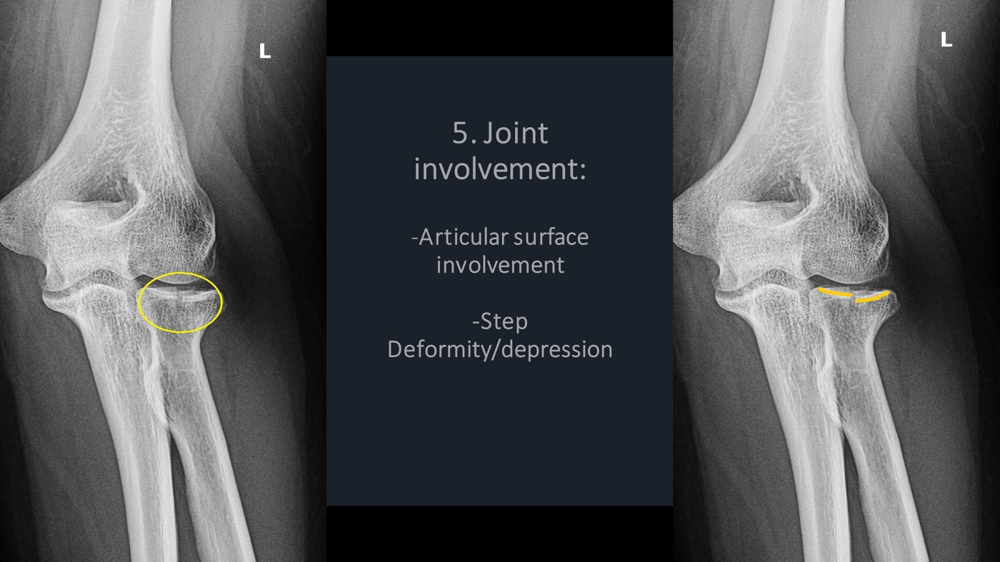
Articular involvement with a small step (radial head). From the deck.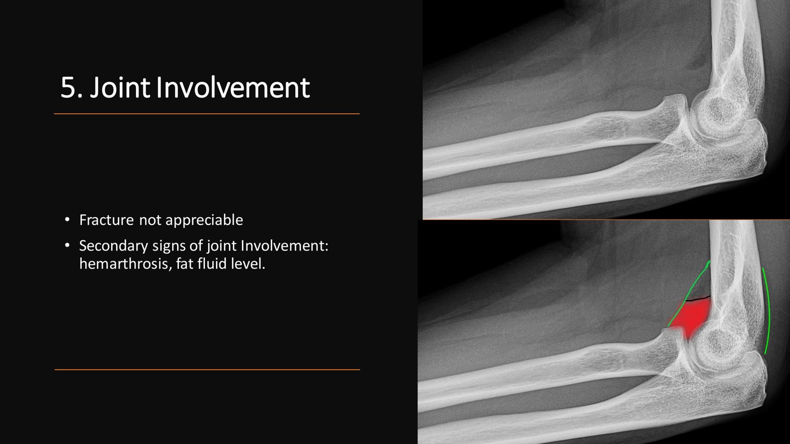
Fat-fluid level: an intra-articular fracture you can't see. From the deck.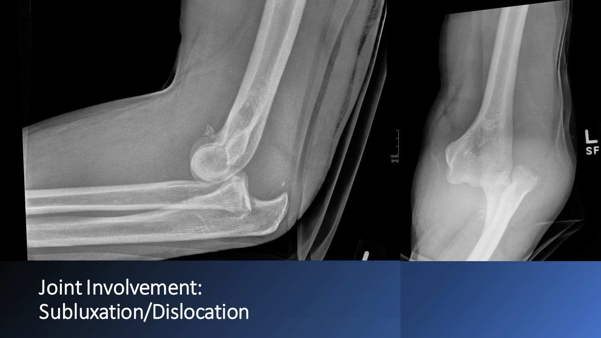
Other Findings
| Finding | What to know |
|---|---|
| Open fracture | The fracture communicates with the skin, so it's a clinical diagnosis. On the film, suspect it with a skin defect, bone poking through, or air in the soft tissues. Management is in 10.5. |
| Periprosthetic | A fracture around a prosthesis (e.g. along the stem of a hip replacement). Describe it like any other, relative to the hardware. |
| Avulsion | A bone fragment pulled off where a tendon or ligament attaches, so you have to know what attaches there. Example: a dorsal triangular fragment at the base of the distal phalanx, where the extensor tendon inserts (mallet finger). |
| Amputation | Give the level (e.g. 4th digit at the middle phalanx) |
| Diastasis | Widening or incongruence of a joint, with or without a fracture: the pubic symphysis, the AC joint, the scapholunate gap, the ankle syndesmosis |
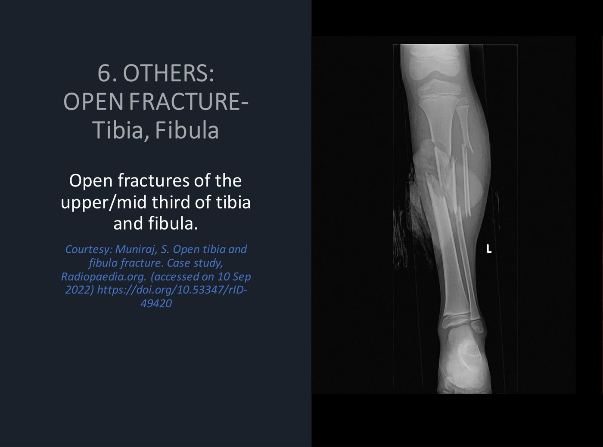
Open tibia and fibula fractures. Radiopaedia, via the deck; the wound photograph is left out.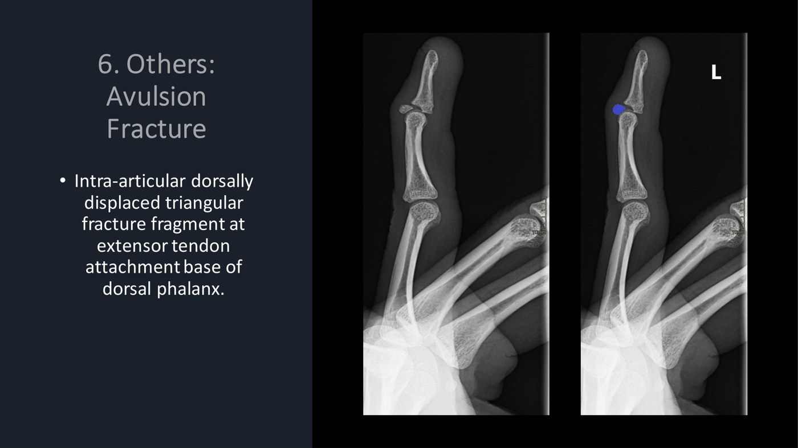
Avulsion at the extensor insertion (mallet finger). From the deck.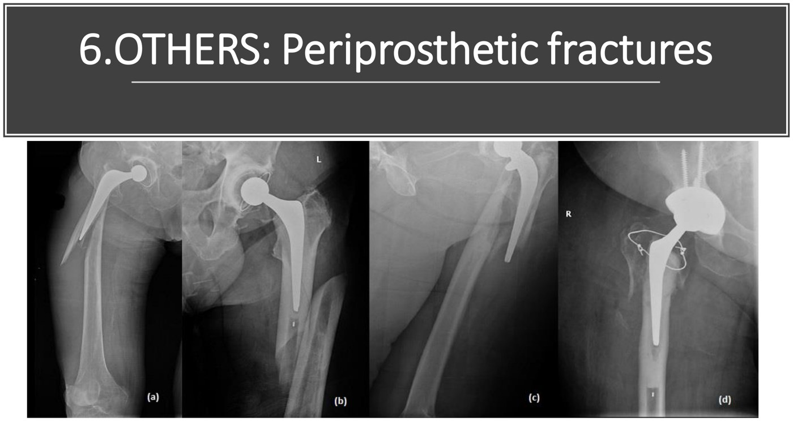
Periprosthetic fractures. From the deck.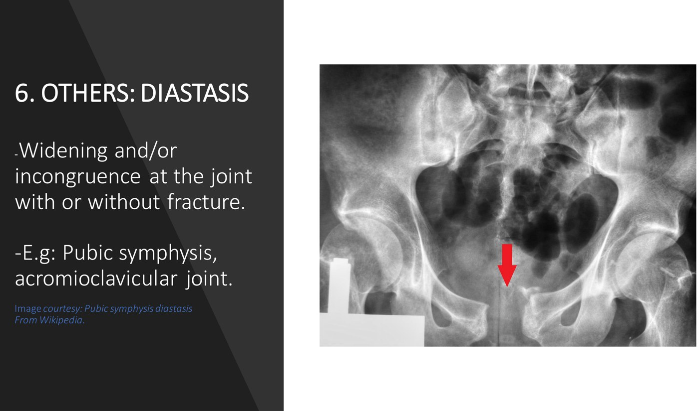
Diastasis of the pubic symphysis. Wikipedia, via the deck.Bone Quality
Always look at the bone the fracture runs through. A pathological fracture happens in weakened bone: it's usually transverse and comes spontaneously or with trivial trauma (the patient may not remember an injury). Causes: a bone tumour, benign or malignant (see 10.6), osteopenia or osteoporosis, metabolic bone disease, or diffuse marrow disease such as lymphoma. In a child, also say whether it reaches the growth plate.
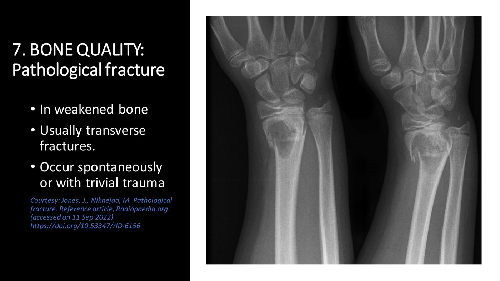
Putting It Together
The module's practice film: a clavicle
Location: midshaft of the left clavicle. Type: complete, oblique. Descriptors: the proximal fragment is displaced cranially by more than a bone width (the clavicle exception), with apex-cranial angulation.
What the knowledge checks test
That segmental and butterfly fractures are the comminuted ones (spiral, greenstick and oblique are not); that an intra-articular fracture shows both an effusion and a fat-fluid level; and that the clavicle is the one bone where the proximal fragment is described.
Healing (the deck's last item): most fractures heal by secondary (callus) healing, and primary healing happens only with rigid internal fixation. Timelines and the x-ray stages are in 10.5.
Built from Dr. Vishal Kalia's “Fracture Imaging and Interpretation” deck, its three recordings and the module's knowledge checks. The positioning drawings, the full-text slides and the wound photograph are left out. The incomplete fracture types are listed in the deck but not explained in the recordings; their one-line definitions come from Radiopaedia (“incomplete fractures”). Note: the angulation slide pairs “varus: apex lateral” with “distal fragment directed laterally” and “valgus: apex medial” with “distal fragment pointing medially”. The apex directions are right, but the distal-fragment directions are reversed: in varus the distal part points medially, in valgus laterally (Radiopaedia, “valgus vs varus”). This page follows Radiopaedia.